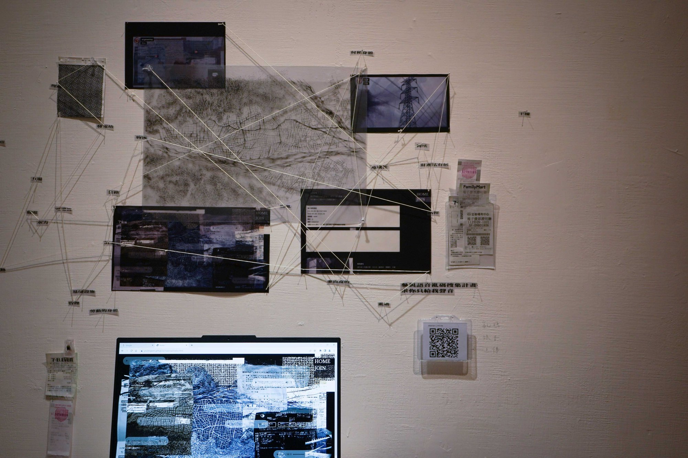
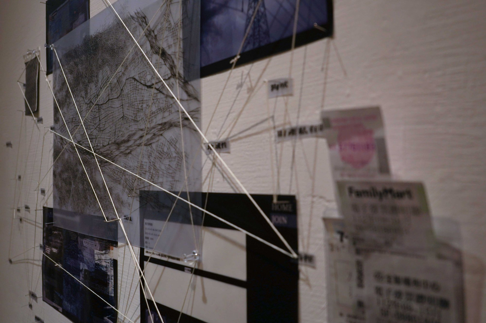

---
---
<!DOCTYPE html>
<html>

<head>
    <meta charset="utf-8">
    <meta name="viewport" content="width=device-width, initial-scale=1.0">
    <meta http-equiv="X-UA-Compatible" content="IE=edge">
	
	<!-- icon -->
	<link rel="icon" sizes="192x192" href="images/logo3.ico">
	<link rel="shortcut icon" href="images/logo3.ico" type="image/x-icon"/>
	<link rel="apple-touch-icon" href="images/logo3.ico" type="image/x-icon"/>

    <title>Exhibition: Walking among the Differents</title>

    <!-- Bootstrap CSS CDN -->
    <link rel="stylesheet" href="https://stackpath.bootstrapcdn.com/bootstrap/4.1.0/css/bootstrap.min.css" integrity="sha384-9gVQ4dYFwwWSjIDZnLEWnxCjeSWFphJiwGPXr1jddIhOegiu1FwO5qRGvFXOdJZ4" crossorigin="anonymous">
    <!-- Our Custom CSS -->
    <link rel="stylesheet" href="css/nav_1.css">
	<link rel="stylesheet" href="css/work_1.css">


    <!-- Font Awesome JS -->
    <script defer src="https://use.fontawesome.com/releases/v5.0.13/js/solid.js" integrity="sha384-tzzSw1/Vo+0N5UhStP3bvwWPq+uvzCMfrN1fEFe+xBmv1C/AtVX5K0uZtmcHitFZ" crossorigin="anonymous"></script>
    <script defer src="https://use.fontawesome.com/releases/v5.0.13/js/fontawesome.js" integrity="sha384-6OIrr52G08NpOFSZdxxz1xdNSndlD4vdcf/q2myIUVO0VsqaGHJsB0RaBE01VTOY" crossorigin="anonymous"></script>

</head>

<body data-pagenum="1">

    <div class="wrapper">
		
        {% include nav.html %}

        <!-- Page Content Holder -->
        <div id="content">

            <nav class="navbar navbar-expand-lg ">
                <div class="container-fluid">

                    <button type="button" id="sidebarCollapse" class="navbar-btn" aria-label="切換選單 Toggle navigation">
                        <span></span>
                        <span></span>
                        <span></span>
                    </button>

                </div>
            </nav>
            
            <!--section-->
	<section>
	<article>
	<div class="introtext">
		<p>2023 參展：陽明交大應用藝術所師生聯展＿邊界之間</p>
		
		<div class="exhibitionimg">
		
		
		
		
		</div>
	</div>
	</article>


		<div class="next">
			<p><u><a href="https://youtingwen.github.io/work/work_walking.html" style="color:gray">作品：交涉在差異間遊蕩</a></u></p>
			</a>	
		</div>

	</section>
			

			
	</div>
</div>

    <!-- jQuery CDN - Slim version (=without AJAX) -->
    <script src="https://code.jquery.com/jquery-3.3.1.slim.min.js" integrity="sha384-q8i/X+965DzO0rT7abK41JStQIAqVgRVzpbzo5smXKp4YfRvH+8abtTE1Pi6jizo" crossorigin="anonymous"></script>
    <!-- Popper.JS -->
    <script src="https://cdnjs.cloudflare.com/ajax/libs/popper.js/1.14.0/umd/popper.min.js" integrity="sha384-cs/chFZiN24E4KMATLdqdvsezGxaGsi4hLGOzlXwp5UZB1LY//20VyM2taTB4QvJ" crossorigin="anonymous"></script>
    <!-- Bootstrap JS -->
    <script src="https://stackpath.bootstrapcdn.com/bootstrap/4.1.0/js/bootstrap.min.js" integrity="sha384-uefMccjFJAIv6A+rW+L4AHf99KvxDjWSu1z9VI8SKNVmz4sk7buKt/6v9KI65qnm" crossorigin="anonymous"></script>

    <script type="text/javascript">
        $(document).ready(function () {
            $('#sidebarCollapse').on('click', function () {
                $('#sidebar').toggleClass('active');
                $(this).toggleClass('active');
            });
        });
    </script>

	
	<script>
		$(document).ready(function(){
	
	var pn = $("body").data("pagenum");
	$(".li_1").eq(pn) .addClass("nav_ch");
	//增加點選頁面後的固定底線，記得body後面增加編號
		})
	
	</script>
	
	
	
</body>

</html>
